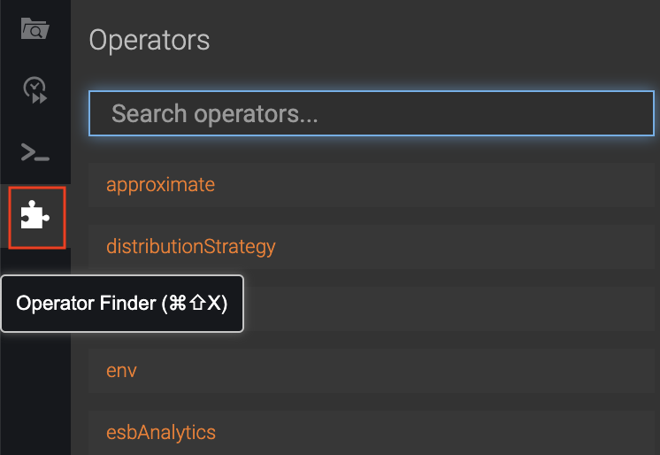
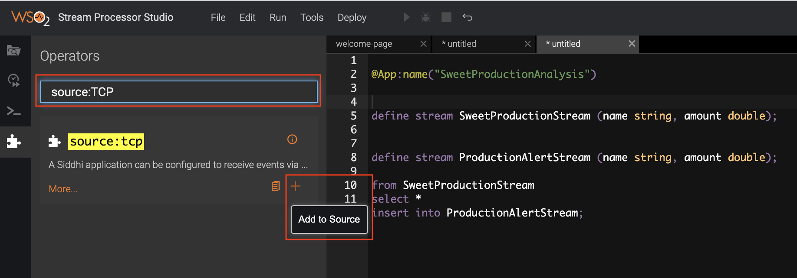
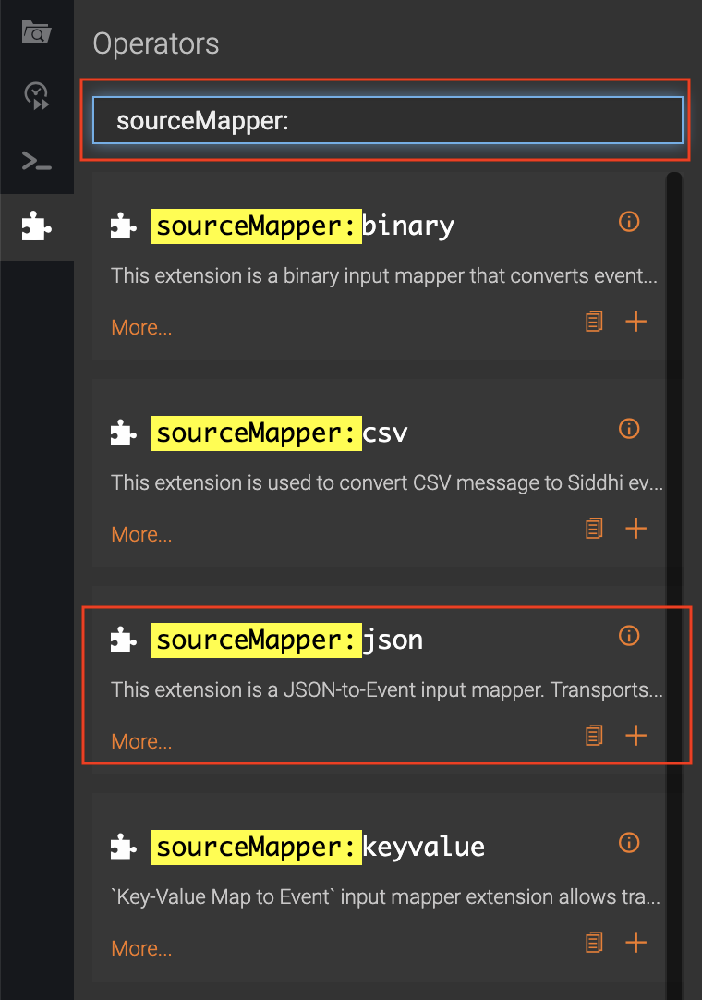

Creating a Siddhi Application¶
Siddhi applications are files that define the Siddhi logic to process the events sent to the Streaming Integrator. They are written in the Siddhi Query Language using the Streaming Integrator Studio.
A Siddhi file contains the following configurations:
| Configuration | Description |
|---|---|
| Stream | A logical series of events ordered in time with a uniquely identifiable name, and set of defined attributes with specific data types defining its schema. |
| Source | This consumes data from external sources (such as TCP , Kafka , HTTP , etc) in the form of events, then converts each event (that can be in XML , JSON , binary , etc. format) to a Siddhi event, and passes that to a stream for processing. |
| Sink | This takes events arriving at a stream, maps them to a predefined data format (such as XML , JSON, binary , etc), and publishes them to external endpoints (such as E-mail , TCP , Kafka , HTTP , etc). |
| Executional Element | An executional element can be one of the following:
|
A Siddhi application can be created from the source view or the design view of the Streaming Integrator Studio.
Creating a Siddhi application in the source view¶
To create a Siddhi application via the source view of the Streaming Integrator Studio, follow the steps below:
- Start the Streaming Integrator Studio by navigating to the
<SI_TOOLING_HOME>/bindirectory and issue one of the following commands:- For Windows:
streaming-integrator-tooling.bat - For Linux:
./streaming-integrator-tooling.shThe Stream Processor Studio opens as shown below.

- For Windows:
- Click New to start defining a new Siddhi application. A new file
opens as shown below.

-
Add the following sample Siddhi application to the file.
@App:name("SweetProductionAnalysis") @Source(type = 'tcp', context='SweetProductionData', @map(type='binary')) define stream SweetProductionStream (name string, amount double); @sink(type='log', @map(type='json')) define stream ProductionAlertStream (name string, amount double); from SweetProductionStream select * insert into ProductionAlertStream;Info
Note the following in this Siddhi application
Configuration Description Stream This stream contains two stream configurations:
-
SweetProductionStreamThis is the input stream that defines the schema based on which events are selected to be processed by the
SweetProductionAnalysisSiddhi application. Events received via the source in this application are directed to this stream. -
ProductionAlertStreamThis is the output stream from which the sink configured in this application takes events to be published as the output.
Source
This source configuration has the following sections:-
@Source(type = ‘tcp’, context='SweetProductionData'This configuration defines
tcpas the transport via which events are received to be processed by theSweetProductionAnalysisSiddhi application. -
@map(type='binary'))This configuration defines the input mapping. In this scenario, Binary Mapper is used which converts input events into binary events and feeds them into siddhi.
The source types and map types are available as Siddhi extensions, and you can find via the operator finder as follows:-
Click the Operator Finder icon to open the Operator Finder.

-
Move the cursor to the location in the Siddhi application where you want to add the source.

-
Search for the required transport type. Once it appears in the search results, click the Add to Source icon on it.
 -
Similarly, search for the mapping type you want to include in the source configuration, and add it.

-
The source annotation is now displayed as follows. You can add the other properties as required, and save your changes.

Sink This sink configuration has the following sections:
-
@sink(type='log')This configuration defines
logas the transport via which the processed events are published from theProductionAlertStreamoutput stream. Log sink simply publishes events into the console. -
@map(type='json'))This configuration defines the output mapping. Events are published with the
jsonmapping type. Json mapper converts the events in theProductionAlertStreamto the Json format.
Executional Elements from SweetProductionStream
select *
insert into ProductionAlertStream;This is where the logic of the siddhi app is defined. In this scenario, all the events received in the
SweetProductionStreaminput stream are inserted into theProductionAlertStreamoutput stream. -
-
To save this Siddhi application, click File , and then click Save . By default siddhi applications are saved in the
<SI_HOME>/wso2/editor/deployment/workspacedirectory. -
To export the Siddhi application to your preferred location, click File , and then click Export File .
- To see a graphical view of the event flow you defined in your Siddhi
application, click Design View .

The event flow is displayed as follows.
 {width="900"}
{width="900"}
Creating a Siddhi application in the design view¶
To create a Siddhi application via the design view of the WSO2 SP Stream Processor Studio, follow the steps below:
- Start the Streaming Integrator Studio by navigating to the
<SI_TOOLING_HOME>/bindirectory and issue one of the following commands:- For Windows:
streaming-integrator-tooling.bat - For Linux:
./streaming-integrator-tooling.shThe Stream Processor Studio opens as shown below.
- For Windows:
- Click New to start defining a new Siddhi application. A new file
opens as shown below.
- To open the design view, click Design View .
-
To define the input stream into which the events to be processed via the Siddhi application should be received, drag and drop the stream icon (shown below) into the grid.
 Once the stream component is added to the grid, move the cursor over
it, and then click on the settings icon as shown below.
Once the stream component is added to the grid, move the cursor over
it, and then click on the settings icon as shown below.

As as result, the Stream Configuration form opens as follows.
 Fill this form as follows to define a stream named
Fill this form as follows to define a stream named SweetProductionStreamwith two attributes namednameandamount:- In the Name field, enter
SweetProductionStream. -
In the Attributes table, enter two attributes as follows. You can click +Attribute to add a new row in the table to define a new attribute.
Attribute Name Attribute Type namestringamountdouble -
Click Submit to save the new stream definition. As a result, the stream is displayed on the grid with the
SweetProductionStreamlabel as shown below.

- In the Name field, enter
-
To define the output stream to which the processed events need to be directed, drag and drop the stream icon again. Place it after the
SweetProductionStreamstream. This stream should be namedProductionAlertStreamand have the following attributes.Attribute Name Attribute Type namestringtotalProductionlong -
To add the source from which events are received, drag and drop the source icon (shown below) into the grid. The source is an input to the SweetProductionStream input stream component. Therefore, place this source component to the left of the input stream component in the grid.
 Once you add the source component, draw a line from it to the
SweetProductionStream input stream component by dragging the
cursor as demonstrated below.
Once you add the source component, draw a line from it to the
SweetProductionStream input stream component by dragging the
cursor as demonstrated below.

Click the settings icon on the source component you added to open the Source Configuration form. Then enter information as follows.

-
In the Source Type field, select tcp .
-
For this example, assume that events are received in the
binaryformat. To indicate that events are expected to be converted from this format, select binary in the Map Type field. -
To indicate the context, select the context check box and enter
SweetProductionDatain the field that appears below. - Click Submit.
-
-
To add a query that defines the execution logic, drag and drop the projection query icon (shown below) to the grid.

The query uses the events in theSweetProductionStreaminput stream as inputs and directs the processed events (which are its output) to theProductionAlertStreamoutput stream. Therefore, create two connections as demonstrated below.

-
To define the execution logic, move the cursor over the query in the grid, and click on the settings icon that appears. This opens the Query Configuration form. Enter information in it as follows:

- Enter a name for the query in the Name field. In this example, let's enter
queryas the name. - In order to specify how each user defined attribute in the input
stream is converted to generate the output events, select User
Defined Attributes in the Select field. As a result, the
User Defined Attributes table appears. The As column of
this table displays the attributes of the output stream. To
derive the value for each attribute, enter required
expressions/values in the
Expressioncolumn as explained below.- The value for
namecan be derived from the input stream without any further processing. Therefore, enternameas the expression for thenameattribute. - To derive the value for the
totalProductionattribute, the sum of the values for theamountattribute of input events need to be calculated. Therefore, enter the expression as follows to apply thesum()Siddhi function to theamountattribute.
sum(amount) - Leave the default values of the Output section unchanged.
- The value for
- Click Submit to save the information.
- Enter a name for the query in the Name field. In this example, let's enter
-
To add a sink to publish the output events that are directed to the
ProductionAlertStreamoutput stream, drag and drop the sink icon (shown below) into the grid.

Draw an arrow from theProductionAlertStreamoutput stream to the sink component to connect them.Click the settings icon on the sink component you added to open the Sink Configuration form. Then enter information as follows.

1. In this example, let's assume that output needs to be generated as logs in the console. To indicate this, selectlogin the Sink Type field.- In the Map Type field, select the format in which the output
must be generated. For this example, let's select
json. - Click Submit to save the information.
- In the Map Type field, select the format in which the output
must be generated. For this example, let's select
-
To align the Siddhi components that you have added to the grid, click Edit and then click Auto-Align. As a result, all the components are horizontally aligned as shown below.
- Click Source View. The siddhi application is displayed as follows.

-
Click File and then click Save as. The Save to Workspace dialog box appears. In the File Name field, enter
SweetProductionAnalysisand click Save.